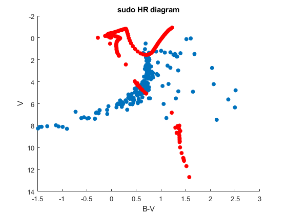

Contents
clear all;
read fits file
Sb=FITS.read2sim('m93_b.fits');
Sv=FITS.read2sim('m93_v.fits');
table = readtable('m93_cata');
gnd_true_table= readtable('theorem/387M.csv');
distance = 881;
Warning: Column headers from the file were modified to make them valid MATLAB
identifiers before creating variable names for the table. The original column
headers are saved in the VariableDescriptions property.
Set 'VariableNamingRule' to 'preserve' to use the original column headers as
table variable names.
B-layer processing
image_b = abs(fitsread('m93_b.fits'));
image_b_raw = image_b;
image_b = log(image_b);
figure();
imagesc(abs(image_b));
h = fspecial('gaussian', 100, 1);
image_b_f = imfilter(image_b, h);
image_b_f(image_b_f<7.0) = 0;
image_b_ff = image_b_f;
image_b_ff(image_b_ff > 0) = 1;
figure();
imagesc(image_b_ff);
title('star region');
image_b_raw = image_b_raw.*image_b_ff;
figure();
imagesc(image_b_raw);
title('Processed Image');
image_b_max = imregionalmax(image_b_f);
figure();
imagesc(image_b_max);
title('Star peaks');
fprintf('found %d stars in B layer!\n', sum(sum(image_b_max)));
found 266 stars in B layer!
V layer processing
image_v = abs(fitsread('m93_v.fits'));
image_v_raw = image_v;
image_v = log(image_v);
figure();
imagesc(image_v);
h = fspecial('gaussian', 100, 1);
image_v_f = imfilter(image_v, h);
figure();
imagesc(image_v_f);
image_v_f(image_v_f<7.8) = 0;
image_v_ff = image_v_f;
image_v_ff(image_v_ff > 0) = 1;
figure();
imagesc(image_v_ff);
title('star region');
image_v_raw = image_v_raw.*image_v_ff;
image_v_max = imregionalmax(image_v_f);
fprintf('found %d stars in V layer!\n', sum(sum(image_v_max)));
Star Matching, star magnitude, dM caculate
[height, width] = size(image_v_max);
result = [];
match = 0;
error =1;
r = 10;
err_b = 0.003;
err_v = 0.003;
sz = size(table);
h = sz(1);
dMb =[];
dMv =[];
for i = 1+r : height -r
for k = 1+r : width -r
match = 0;
if image_v_max(i,k) == 1
wcs_b = xy2coo(Sb(1), i, k).Cat;
wcs_v = xy2coo(Sv(1), i, k).Cat;
xy = coo2xy(Sb(1), wcs_v(1), wcs_v(2)).Cat;
ii = round(xy(1));
kk = round(xy(2));
if(sum(sum(image_b_max(ii-error:ii+error, kk-error:kk+error))) == 1)
match = 1;
end
if match == 1
for g = 1:h
dV = sqrt((table{g, 1}- rad2deg(wcs_v(1)))^2 + (table{g,2}-rad2deg(wcs_v(2)))^2);
dB = sqrt((table{g, 1}- rad2deg(wcs_b(1)))^2 + (table{g,2}-rad2deg(wcs_b(2)))^2);
if(dB < err_b)
t = table{g, 'Bmag'}-(-2.5)*log10(sum(sum(image_b_raw(i-r: i+r,k-r:k+r))));
dMb = [dMb, t];
fprintf('B match at x:%d, y:%d, dM=%d\n', i, k, t);
end
if(dV < err_v)
t = table{g, 'Vmag'}-(-2.5)*log10(sum(sum(image_b_raw(i-r: i+r,k-r:k+r))));
dMv = [dMv, t];
fprintf('V match at x:%d, y:%d, dM=%d\n', i, k, t);
end
end
peak = 0;
for m = ii-error: ii+error
for n = kk - error: kk+error
if m>0 && m<=2048 && n>0 &&n<=2048&&image_b_max(m, n) == 1
peak = 1;
result = [result; log10(sum(sum(image_b_raw(m-r: m+r,n-r:n+r)))),...
log10(sum(sum(image_v_raw(i-r: i+r, k-r:k+r))))];
break;
end
end
if peak == 1
break;
end
end
if peak ~= 1
fprintf('NO MATCHED PEAK IN B IMAGE!\n');
end
end
end
end
end
result = result * -2.5;
B match at x:206, y:778, dM=2.941550e+01
V match at x:206, y:778, dM=2.809550e+01
B match at x:242, y:613, dM=2.953978e+01
V match at x:242, y:613, dM=2.881978e+01
B match at x:307, y:883, dM=2.331667e+01
V match at x:307, y:883, dM=2.243467e+01
B match at x:310, y:1013, dM=2.795774e+01
V match at x:310, y:1013, dM=2.811774e+01
B match at x:530, y:254, dM=3.289705e+01
V match at x:530, y:254, dM=3.178705e+01
B match at x:646, y:1852, dM=2.514093e+01
V match at x:646, y:1852, dM=2.480093e+01
B match at x:689, y:905, dM=2.759958e+01
V match at x:689, y:905, dM=2.569958e+01
B match at x:694, y:919, dM=2.757000e+01
V match at x:694, y:919, dM=2.567000e+01
B match at x:701, y:950, dM=2.335121e+01
V match at x:701, y:950, dM=2.371121e+01
B match at x:770, y:1572, dM=2.977387e+01
V match at x:770, y:1572, dM=2.903387e+01
B match at x:775, y:1614, dM=2.654690e+01
V match at x:775, y:1614, dM=2.626690e+01
B match at x:815, y:1934, dM=2.871973e+01
V match at x:815, y:1934, dM=2.855973e+01
B match at x:827, y:1132, dM=2.275505e+01
V match at x:827, y:1132, dM=2.273505e+01
B match at x:831, y:1106, dM=2.625306e+01
V match at x:831, y:1106, dM=2.623306e+01
B match at x:847, y:1061, dM=3.169970e+01
V match at x:847, y:1061, dM=3.055970e+01
B match at x:874, y:986, dM=2.665206e+01
V match at x:874, y:986, dM=2.670206e+01
B match at x:899, y:320, dM=2.711579e+01
V match at x:899, y:320, dM=2.707579e+01
V match at x:906, y:1802, dM=2.946068e+01
B match at x:910, y:760, dM=2.748306e+01
V match at x:910, y:760, dM=2.768306e+01
B match at x:928, y:226, dM=2.810302e+01
V match at x:928, y:226, dM=2.755302e+01
B match at x:946, y:1204, dM=2.186002e+01
V match at x:946, y:1204, dM=2.130002e+01
B match at x:971, y:1209, dM=2.368908e+01
V match at x:971, y:1209, dM=2.312908e+01
B match at x:981, y:761, dM=2.680705e+01
V match at x:981, y:761, dM=2.570705e+01
B match at x:992, y:655, dM=2.713699e+01
V match at x:992, y:655, dM=2.879699e+01
B match at x:1000, y:822, dM=2.695176e+01
V match at x:1000, y:822, dM=2.975176e+01
B match at x:1002, y:968, dM=2.491008e+01
V match at x:1002, y:968, dM=2.589008e+01
B match at x:1018, y:1152, dM=2.169548e+01
V match at x:1018, y:1152, dM=2.177448e+01
B match at x:1020, y:1601, dM=3.043704e+01
V match at x:1020, y:1601, dM=2.922704e+01
B match at x:1031, y:989, dM=2.220167e+01
V match at x:1031, y:989, dM=2.318167e+01
B match at x:1047, y:1685, dM=2.638674e+01
V match at x:1047, y:1685, dM=2.621674e+01
B match at x:1050, y:1159, dM=2.629967e+01
V match at x:1050, y:1159, dM=2.701967e+01
B match at x:1067, y:1212, dM=2.956677e+01
V match at x:1067, y:1212, dM=2.886677e+01
B match at x:1067, y:1212, dM=2.880677e+01
V match at x:1067, y:1212, dM=2.839677e+01
B match at x:1075, y:944, dM=2.479769e+01
V match at x:1075, y:944, dM=2.121769e+01
B match at x:1075, y:944, dM=2.261069e+01
V match at x:1075, y:944, dM=2.232669e+01
B match at x:1077, y:804, dM=2.522091e+01
V match at x:1077, y:804, dM=2.593091e+01
B match at x:1085, y:1563, dM=2.860515e+01
V match at x:1085, y:1563, dM=2.801515e+01
B match at x:1092, y:1202, dM=2.534558e+01
V match at x:1092, y:1202, dM=2.676558e+01
B match at x:1094, y:633, dM=2.998017e+01
V match at x:1094, y:633, dM=2.861017e+01
B match at x:1111, y:830, dM=2.417739e+01
V match at x:1111, y:830, dM=2.402939e+01
B match at x:1123, y:383, dM=2.919305e+01
V match at x:1123, y:383, dM=2.854305e+01
B match at x:1140, y:1049, dM=2.393281e+01
V match at x:1140, y:1049, dM=2.354881e+01
B match at x:1189, y:1830, dM=2.910474e+01
V match at x:1189, y:1830, dM=2.709474e+01
B match at x:1263, y:1185, dM=2.642431e+01
V match at x:1263, y:1185, dM=2.522431e+01
B match at x:1278, y:580, dM=2.788499e+01
V match at x:1278, y:580, dM=2.657499e+01
B match at x:1305, y:892, dM=2.477821e+01
V match at x:1305, y:892, dM=2.499821e+01
B match at x:1305, y:892, dM=2.692821e+01
V match at x:1305, y:892, dM=2.629821e+01
B match at x:1313, y:1162, dM=2.829297e+01
V match at x:1313, y:1162, dM=2.896297e+01
B match at x:1363, y:1250, dM=2.914740e+01
V match at x:1363, y:1250, dM=2.987740e+01
B match at x:1404, y:778, dM=2.848870e+01
V match at x:1404, y:778, dM=2.643870e+01
B match at x:1444, y:1065, dM=3.052635e+01
V match at x:1444, y:1065, dM=2.669635e+01
B match at x:1450, y:233, dM=3.067114e+01
V match at x:1450, y:233, dM=2.779114e+01
B match at x:1458, y:220, dM=2.979980e+01
V match at x:1458, y:220, dM=2.691980e+01
B match at x:1513, y:536, dM=3.029013e+01
V match at x:1513, y:536, dM=2.974013e+01
B match at x:1578, y:130, dM=3.252088e+01
V match at x:1578, y:130, dM=3.162088e+01
B match at x:1622, y:791, dM=2.344983e+01
V match at x:1622, y:791, dM=2.317983e+01
B match at x:1640, y:1656, dM=2.438108e+01
V match at x:1640, y:1656, dM=2.470108e+01
B match at x:1718, y:1702, dM=2.497526e+01
V match at x:1718, y:1702, dM=2.462526e+01
B match at x:1835, y:504, dM=2.872413e+01
V match at x:1835, y:504, dM=2.835413e+01
B match at x:1865, y:666, dM=2.539440e+01
V match at x:1865, y:666, dM=2.476440e+01
B match at x:1903, y:556, dM=2.832221e+01
V match at x:1903, y:556, dM=2.802221e+01
diagram
result(:,1) = result(:,1) + median(dMb);
result(:,2) = result(:,2) + median(dMv);
fprintf('dM of B: %f\n', median(dMb));
fprintf('dM of V: %f\n', median(dMv));
B_V = result(:,1) - result(:,2);
V = result(:,2) -5*log10(distance)+5;
B_V_true = gnd_true_table{:,1};
V_true = gnd_true_table{:,2};
figure();
HR = axes;
scatter(HR ,B_V, V, 'filled');
hold;
scatter(HR, B_V_true, V_true, 'filled','r');
HR.YDir = 'reverse';
title('sudo HR diagram');
xlabel('B-V');
ylabel('V');
dM of B: 27.126387
dM of V: 26.702064
Current plot held
